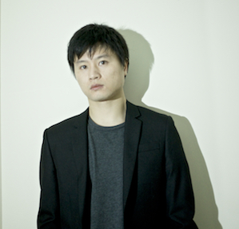
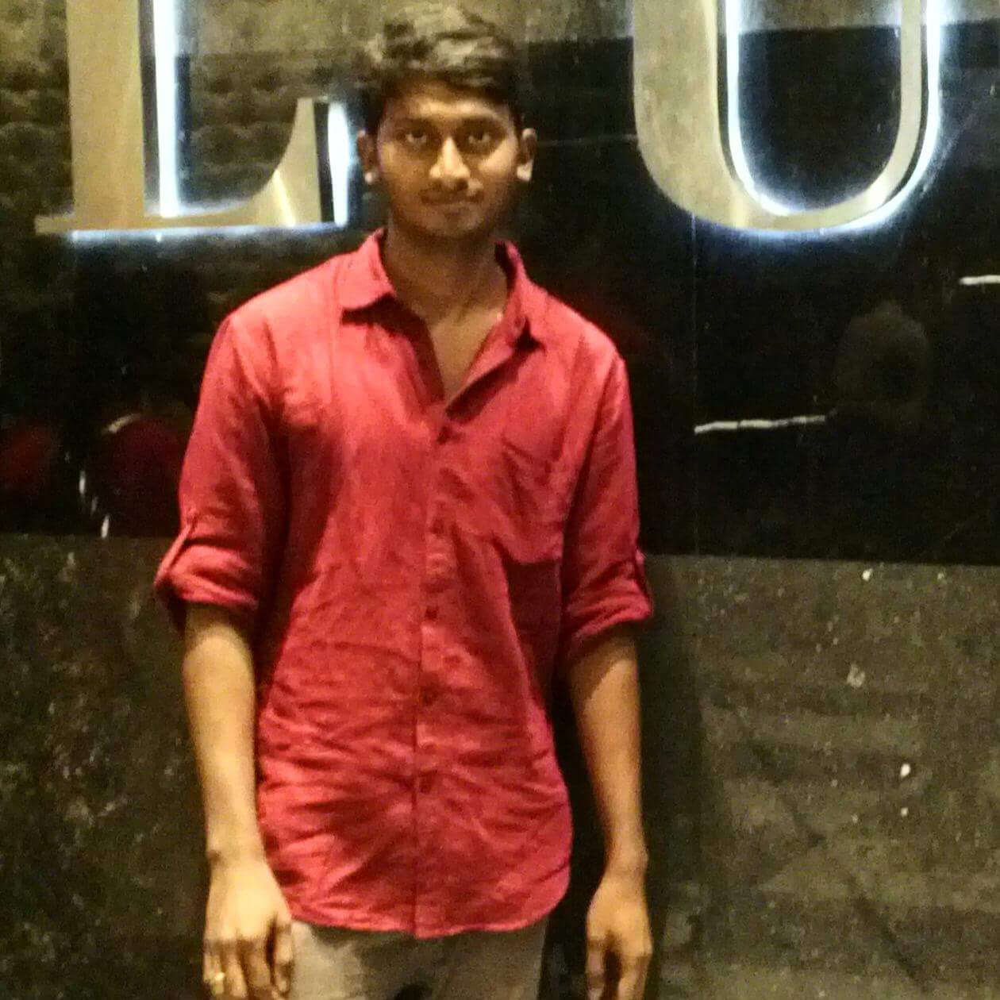

'OpenSees for Fire' Group
| Prof Asif Usmani Group Supervisor; Head of BSE department, PolyU OpenSees for structures in fire asif.usmani@polyu.edu.hk |
|
|  | Dr Liming Jiang Research Fellow, PolyU Modelling 'Structures in fire', SIFBuilder and other applications liming.jiang@polyu.edu.hk |
| Dr Jian Jiang Previous PhD Researcher, graduated in 2012 Thermo-mechanical analysis, beam-column element, shell element |
|
| Dr Yaqiang Jiang Previous PhD Researcher, graduated in 2013 Heat transfer analysis |
|
 |
Dr Panagiotis Kotsovinos Previous PhD Researcher, graduated in 2013 Multi-floor fire |
| Dr Jian Zhang Previous PhD Researcher, graduated in 2014 Thermo-mechanical analysis, beam-column element |
|
| Dr Praveen Kamath Visiting Researcher, started in 2010 OpenSees for Fire document praveen.kamath@gmail.com |
|
| Xu Dai PhD Researcher, started in 2013 Travelling fire, SIFBuilder x.dai@ed.ac.uk |
|
| Jiayu Hu PhD Researcher, started in 2014 Bridges in fire jiayu.hu@ed.ac.uk |
|
| Zhujun Zhang PhD Researcher, started in 2014 Concrete Material, LITS zhujun.zhang@ed.ac.uk |
|
| Mian Zhou PhD Researcher, started in 2015 Earthquake damged structural modelling, stainless steel mian.zhou@brunel.ac.uk |
|
|  | Domada Veera Venkata Ramakanth PhD Researcher, started in 2018 Collapse analysis of Plasco tower using OpenSEES software ramakanth.domada@connect.polyu.hk |
 |
Tejeswar Yarlagadda PhD Researcher, started in 2017 3D Printing tejeswar.yarlagadda@connect.polyu.hk |
|
Anwar Orabi PhD Researcher, started in 2018 Shells anwar.orabi@connect.polyu.hk |
|
Aatif Ali Khan PhD Researcher, started in 2019 Shells alikhan.aatif@connect.polyu.hk |
This page is created by Liming Jiang, 2016